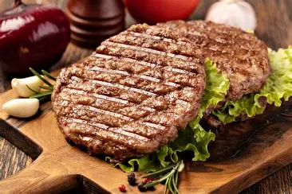
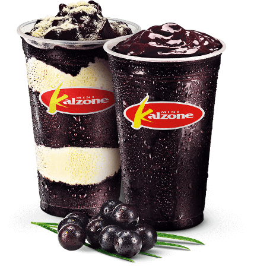

A carne de hambúrguer é um disco de carne moída moldada e geralmente grelhada ou frita, temperada de forma simples para formar uma camada dourada por fora e permanecer suculenta por dentro.

O pudim é uma sobremesa cremosa feita a partir de uma mistura de leite, ovos e açúcar, cozida até adquirir uma textura firme e lisa, geralmente coberta com calda de caramelo. de dois tipos de alimentos.
O strogonoff de carne é um prato composto por tiras de carne cozidas em um molho cremoso, geralmente feito com creme de leite e temperos, formando uma mistura rica e macia.

Um smoothie de açaí é uma bebida cremosa feita ao bater polpa de açaí com frutas e algum líquido, resultando em uma mistura espessa, gelada e levemente adocicada.